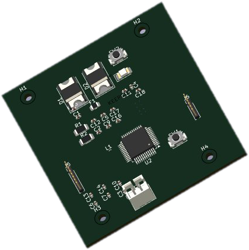

Home / Work / STM32 GPS Tracker
STM32 GPS Tracker Board

- Tool
- KiCad
- MCU
- STM32
- Positioning
- GPS module
- Storage
- microSD slot
- Comms
- UART
- Layers
- Multi-layer + ground plane
- Mechanical
- Enclosure mounting holes
- Verification
- DRC + ERC
01The challenge
An STM32, a GPS module and an SD card share one board, and each needs clean signals: the MCU's digital lines, the GPS RF front end and the SD data bus.
02My role
- Board design and layout in KiCad
- Ground plane and power management circuitry
- GPS antenna keep-out and mounting holes for an enclosure
- DRC/ERC verification
03Engineering approach
- Dedicated ground plane and power management to keep each section quiet.
- GPS module placed inside its own keep-out zone, clear of copper pour and crossing traces so reception is not compromised.
- Multi-layer routing with a solid ground plane.
04PCB design
3D board

05Verification
DRC and ERC were run and reviewed before fabrication.
06Final output
- KiCad design verified for fabrication
07Project result
A compact tracker board combining MCU, GPS and SD logging, with the GPS section isolated by a dedicated keep-out.